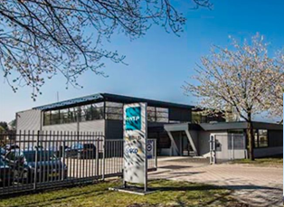
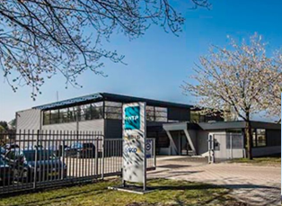

GIS
Stel je voor dat je niet alleen met woorden of cijfers kunt vertellen waar iets is, maar dat je het meteen op een kaart tot leven ziet komen. Dat is precies wat (Arc)GIS doet: het koppelt informatie aan locaties. Of het nu gaat om kabels onder de grond, een nieuwbouwproject of het plannen van onderhoud, met GIS heb je alle data overzichtelijk op één digitale kaart. Voor een organisatie als NTP betekent dit: Slimmer plannen van projecten (bijvoorbeeld wegwerkzaamheden of infra-onderhoud). Direct inzicht in ondergrondse en bovengrondse data: minder verrassingen, meer efficiëntie. Betere samenwerking, omdat iedereen met dezelfde kaart werkt. Kortom: ArcGIS helpt om data niet alleen te bewaren, maar vooral om er iets mee te doen — zodat beslissingen sneller, beter en met meer zekerheid genomen kunnen worden.
FME
Data zijn er in alle soorten en maten: Excel, AutoCAD, shapefiles, databases, noem maar op. Vaak praten die bestanden niet vanzelf met elkaar — en daar komt FME om de hoek kijken. FME is de tolk en klusjesman in één: hij vertaalt, combineert en bewerkt data zodat alles netjes in hetzelfde verhaal past. Voor NTP betekent dat: Minder tijd kwijt aan handmatig knippen en plakken van bestanden. Data slim omzetten en koppelen zodat projecten sneller opgestart kunnen worden. Altijd actuele en consistente informatie beschikbaar voor iedereen in het project. Kortom: FME maakt van een wirwar aan data een overzichtelijk geheel. Het zorgt dat data beweegt waar jij dat wilt, zodat jij je kunt richten op de inhoud van het project in plaats van op bestandsformaten.
SCAN – Xgrid Projecten
VGIS
VGIS(Vsite) is een platform dat je ruimtelijke data (GIS, CAD, 3D-scans, KLIC-data.) omzet in visuele, augmented reality–ondersteunde inzichten, zodat wat normaliter op een plat of abstract kaartje staat, bijna letterlijk zichtbaar wordt op de plek waar je staat. Waarom vGIS interessant voor NTP • Veiligheid en risicovermindering: Minder kans op ongelukken of schade aan bestaande infrastructuur (leidingen, kabels) als je vooraf precies kunt zien waar ze liggen. • Efficiëntie bij projecten: Je bespaart tijd in planning, uitvoering en documentatie, omdat minder gecontroleerd hoeft te worden, en fouten eerder worden opgespoord. • Betere samenwerking: Iedereen (kantoor, uitvoerder, onderaannemers) werkt met dezelfde actuele informatie en visualisaties, minder verwarring. • Hogere kwaliteit van documentatie: As-built tekeningen zijn nauwkeuriger, vollediger, sneller beschikbaar. Nuttig voor latere fasen (onderhoud, inspectie).
AI
Ook binnen NTP willen we de kracht van Artificial Intelligence (AI) benutten om onze processen slimmer en efficiënter te maken. Denk aan automatische patroonherkenning in geo-data, voorspellingen voor planning en onderhoud, of het sneller verwerken van grote hoeveelheden projectinformatie. AI helpt ons om niet alleen reactief maar ook proactief te werken: problemen eerder signaleren, kansen sneller benutten en onze projecten aantoonbaar duurzamer en veiliger uit te voeren.
De komende periode verkennen we verschillende toepassingen en bouwen we pilots, zodat AI stap voor stap een vast onderdeel wordt van onze werkprocessen.
Maatvoering
Beschikbaarheid per landmeter (komende 3 maanden). Groen = vrij, Oranje = half, Rood = vol.
Nieuws
Hoevelaken, 3 september 2025 — NTP introduceert NTP GeoDataloket, een nieuwe afdeling die als spil fungeert voor alles wat met geo-data, kaarten en ruimtelijke analyses te maken heeft. Met NTP GeoDataLoket zet NTP een volgende stap in digitale vernieuwing en ondersteunt het teams bij het sneller, slimmer en veiliger uitvoeren van projecten.
Waarom GeoDataLoket?
Steeds meer werkprocessen bij NTP leunen op geografische informatie: van ontwerp en planning tot uitvoering en beheer. GeoDataLoket combineert expertise in geo-data met praktische tools, zodat collega’s één aanspreekpunt hebben voor betrouwbare kaarten, analyses en datagedreven besluitvorming.
Wat doet NTP GeoDataLoket concreet?
- Datavoorziening & beheer: opzetten en beheren van centrale geo-datasets, inclusief kwaliteitsborging en versiebeheer.
- Analyses & voorbereiding visualisaties: ruimtelijke analyses, dashboards en interactieve kaartviews voor tender, voorbereiding en uitvoering.
- Innovatie R&D: verkennen en pilotten van nieuwe technieken (o.a. LiDAR, reality capture, AI-interpretatie, sensordata).
- Procesintegratie: koppelingen met bestaande systemen (BIM, planning, assetmanagement) en standaardisatie van werkafspraken.
- Support & training: helpdesk, korte instructies en verdiepingstrainingen voor projectteams.
“Met GeoDataLoket brengen we geo-kennis en innovatieve tooling dicht bij de werkvloer. Dat levert tijdwinst op, vermindert faalkosten en maakt onze projecten aantoonbaar duurzamer,” aldus [Bjorn Wunderink].
Voor wie?
Alle NTP-collega’s die werken met locatiegebonden informatie: tender- en projectleiders, uitvoerders, werkvoorbereiders, ontwerpers en assetmanagers.
Contact
Onze locaties
 
